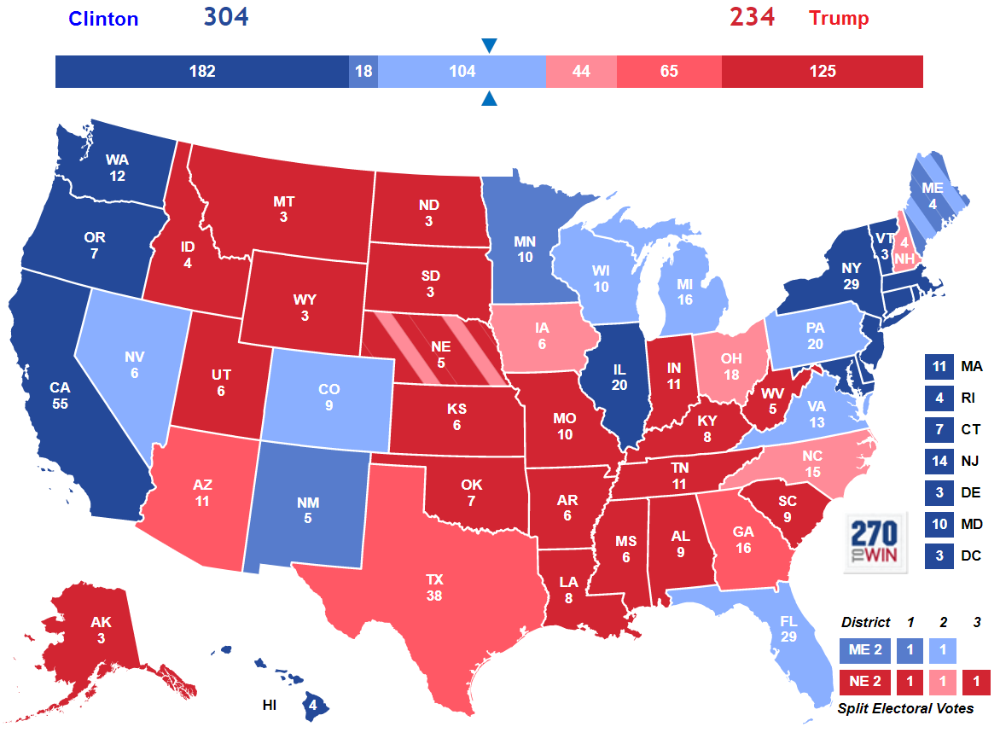

24 July 2019
Updated 4 July 2020 to correct a bug in the nationwide electoral college simulation.
People frequently ask me whether I predicted Trump winning the 2016 election, and I tell them no, that my model gave Clinton a very comfortable victory. But then I mention that the same model predicted all 50 states in 2012.
Then I explain to them about how after 2016, I completely redesigned my model and how it incorporates uncertainties, etc., etc. So then the natural question to ask is, well, then how would it have done on the 2016 election?
Good question.
Especially because of the fact that the redesign happened because of 2016, I was curious myself as to how it would have measured up if it had been run in 2016.
So here's the answer.
Methodology: I ran the model on the polling data from 2016 on 15 battleground states along with ME-2 and NE-2. A weaker model was used on MN and NM due to absence of sufficient good polling data. The remaining 33 states and DC were assumed to be safely Democratic or Republican according to their partisan lean. So overall, my model was partially run on the overall election, which is probably what is going to happen when I run it on the presidential election next year, since few states have enough polling data for my model to work. Here were the results:

The following table compares the results of my 2018-OLS and LAD models to FiveThirtyEight's Polls-Only model and the RealClearPolitics average, with the actual result shown in the final column.
| State | Electoral Votes | 2018-OLS Expected | 2018-OLS Probability | 2018-LAD Expected | 2018-LAD Probability | FiveThirtyEight Polls-Only Probability |
FiveThirtyEight Polls-Only Margin |
RealClearPolitics Spread | Actual Result |
| Arizona | 11 | Trump +3.94 | Trump 88.0% | Trump +2.75 | Trump 88.9% | Trump 66.6% | Trump +2.2 | Trump +4.0 | Trump +3.55 |
| Colorado | 9 | Clinton +4.33 | Clinton 66.4% | Clinton +4.00 | Clinton 64.0% | Clinton 77.5% | Clinton +4.1 | Clinton +2.9 | Clinton +4.91 |
| Florida | 29 | Clinton +0.71 | Clinton 57.8% | Clinton +1.39 | Clinton 64.4% | Clinton 55.1% | Clinton +0.6 | Trump +0.2 | Trump +1.20 |
| Georgia | 16 | Trump +3.27 | Trump 82.2% | Trump +2.76 | Trump 93.5% | Trump 79.1% | Trump +4.0 | Trump +4.8 | Trump +5.16 |
| Iowa | 6 | Trump +2.13 | Trump 59.7% | Trump +2.81 | Trump 60.9% | Trump 69.8% | Trump +2.9 | Trump +3.0 | Trump +9.41 |
| Maine | 4 | Clinton +1.54 | Clinton 56.7% | Clinton +2.80 | Clinton 61.3% | Clinton 82.6% | Clinton +7.5 | Clinton +4.5 | Clinton +2.96 |
| Michigan | 16 | Clinton +3.72 | Clinton 72.2% | Clinton +4.50 | Clinton 85.2% | Clinton 78.9% | Clinton +4.2 | Clinton +3.4 | Trump +0.23 |
| North Carolina | 15 | Trump +1.01 | Trump 56.9% | Trump +0.25 | Trump 51.6% | Clinton 55.5% | Clinton +0.7 | Trump +1.0 | Trump +3.66 |
| New Hampshire | 4 | Trump +0.75 | Trump 54.1% | Trump +1.14 | Trump 56.3% | Clinton 69.8% | Clinton +3.6 | Clinton +0.6 | Clinton +0.37 |
| Nevada | 6 | Clinton +2.06 | Clinton 66.9% | Clinton +0.25 | Clinton 52.2% | Clinton 58.3% | Clinton +1.2 | Trump +0.8 | Clinton +2.42 |
| Ohio | 18 | Trump +3.01 | Trump 67.2% | Trump +1.22 | Trump 58.7% | Trump 64.6% | Trump +1.9 | Trump +3.5 | Trump +8.13 |
| Pennsylvania | 20 | Clinton +3.89 | Clinton 76.2% | Clinton +2.15 | Clinton 69.4% | Clinton 77.0% | Clinton +3.7 | Clinton +1.9 | Trump +0.72 |
| Texas | 38 | Trump +11.33 | Trump 94.9% | Trump +10.48 | Trump 95.4% | Trump 94.0% | Trump +8.5 | Trump +12.0 | Trump +8.99 |
| Virginia | 13 | Clinton +3.76 | Clinton 72.9% | Clinton +5.13 | Clinton 79.6% | Clinton 85.5% | Clinton +5.5 | Clinton +5.0 | Clinton +5.32 |
| Wisconsin | 10 | Clinton +4.97 | Clinton 77.2% | Clinton +4.70 | Clinton 77.3% | Clinton 83.5% | Clinton +5.3 | Clinton +6.5 | Trump +0.77 |
So even this model shows Clinton winning over 300 electoral votes. However, this is a closer prediction than what my old model said in 2016, which gave Clinton 347 electoral votes.
However, this is only half of the story. The other half of the story is the probability of the result:
| Candidate | Probability |
| Hillary Clinton | 65.6% |
| Donald Trump | 33.7% |
The remaining 0.7% is the possiblity of a 269-269 tie.
The median result was Clinton winning 292-246.
The most likely result was Clinton winning 348-190, which is quite similar to what my old model predicted.
So these results now look a lot closer to FiveThirtyEight's election forecast, which gave Clinton a 71.4% chance of winning.
To compare this forecast with FiveThirtyEight and RealClearPolitics, I computed the total loss for each of the outcomes across these 15 states. Here, loss was defined as negative log-likelihood (NLL) for the probabilistic models and sum of squared errors (SSE) for the margins. For those who don't have a background in statistical modeling, remember that smaller loss is better.
| State | 2018-OLS NLL | 2018-LAD NLL | FiveThirtyEight Polls-Only NLL |
2018-OLS SSE | 2018-LAD SSE | FiveThirtyEight Polls-Only SSE |
RealClearPolitics SSE |
| Arizona | 0.13 | 0.12 | 0.41 | 0.15 | 0.64 | 1.82 | 0.20 |
| Colorado | 0.41 | 0.45 | 0.25 | 0.34 | 0.83 | 0.66 | 4.04 |
| Florida | 0.86 | 1.03 | 0.80 | 3.66 | 6.71 | 3.24 | 1.00 |
| Georgia | 0.20 | 0.18 | 0.23 | 3.57 | 5.76 | 1.35 | 0.13 |
| Iowa | 0.52 | 0.50 | 0.36 | 53.00 | 43.56 | 42.38 | 41.09 |
| Maine | 0.57 | 0.49 | 0.19 | 2.02 | 0.03 | 20.61 | 2.37 |
| Michigan | 1.28 | 1.91 | 1.56 | 15.60 | 22.37 | 19.62 | 13.18 |
| North Carolina | 0.56 | 0.66 | 0.81 | 7.02 | 11.63 | 19.01 | 7.08 |
| New Hampshire | 0.78 | 0.83 | 0.36 | 1.25 | 2.28 | 10.43 | 0.05 |
| Nevada | 0.40 | 0.65 | 0.54 | 0.13 | 4.73 | 1.49 | 10.37 |
| Ohio | 0.40 | 0.53 | 0.44 | 26.21 | 47.75 | 38.81 | 21.44 |
| Pennsylvania | 1.44 | 1.18 | 1.47 | 21.25 | 8.24 | 19.54 | 6.86 |
| Texas | 0.05 | 0.05 | 0.06 | 5.48 | 2.22 | 0.24 | 9.06 |
| Virginia | 0.32 | 0.23 | 0.16 | 2.43 | 0.04 | 0.03 | 0.10 |
| Wisconsin | 1.48 | 1.48 | 1.80 | 32.95 | 29.92 | 36.84 | 52.85 |
| TOTAL | 9.38 | 10.29 | 9.44 | 175.07 | 186.70 | 216.08 | 169.82 |
Now let's compare our probabilistic forecast to the other ones listed on the New York Times's Upshot. The following table shows the NLL losses on the probabilistic predictions of various published forecasts. The data is collected from here.
| State | 2018-OLS | 2018-LAD | FiveThirtyEight Polls-Only |
NYT Upshot | HuffPost | PredictWise | Princeton Election Consortium |
Daily Kos |
| Arizona | 0.13 | 0.12 | 0.41 | 0.17 | 0.09 | 0.20 | 0.09 | 0.08 |
| Colorado | 0.41 | 0.45 | 0.25 | 0.12 | 0.01 | 0.05 | 0.04 | 0.01 |
| Florida | 0.86 | 1.03 | 0.80 | 1.11 | 2.12 | 1.47 | 1.17 | 1.97 |
| Georgia | 0.20 | 0.18 | 0.23 | 0.19 | 0.07 | 0.09 | 0.13 | 0.02 |
| Iowa | 0.52 | 0.50 | 0.36 | 0.48 | 0.12 | 0.24 | 0.30 | 0.01 |
| Maine | 0.57 | 0.49 | 0.19 | 0.09 | 0.01 | 0.02 | 0.02 | 0.01 |
| Michigan | 1.28 | 1.91 | 1.56 | 2.81 | 4.61 | 3.00 | 1.56 | 5.30 |
| North Carolina | 0.56 | 0.66 | 0.81 | 1.02 | 1.77 | 1.08 | 1.11 | 1.39 |
| New Hampshire | 0.78 | 0.83 | 0.36 | 0.24 | 0.08 | 0.17 | 0.46 | 0.01 |
| Nevada | 0.40 | 0.65 | 0.54 | 0.39 | 0.16 | 0.09 | 0.17 | 0.36 |
| Ohio | 0.40 | 0.53 | 0.44 | 0.62 | 0.31 | 0.40 | 0.46 | 0.13 |
| Pennsylvania | 1.44 | 1.18 | 1.47 | 2.21 | 4.61 | 2.66 | 1.56 | 5.30 |
| Texas | 0.05 | 0.05 | 0.06 | 0.04 | 0.01 | 0.01 | 0.01 | 0.01 |
| Virginia | 0.32 | 0.23 | 0.16 | 0.04 | 0.01 | 0.02 | 0.02 | 0.01 |
| Wisconsin | 1.48 | 1.48 | 1.80 | 2.66 | 4.61 | 3.91 | 3.91 | 5.30 |
| TOTAL | 9.38 | 10.29 | 9.44 | 12.18 | 18.58 | 13.41 | 11.02 | 19.88 |
Note that the columns of these two tables may not add up perfectly due since these presented numbers are rounded.
First, let's take a look at the NLL losses. They were the largest in Wisconsin, Pennsylvania, and Michigan, as we expected. We see here that the OLS model did relatively similar to (though slightly better than) FiveThirtyEight in these 15 states. The LAD model did much worse, but still beat all of the other predictions, including the Princeton Election Consortium.
Now consider the SSE losses. The models missed the most in Iowa, Michigan, Ohio, Pennsylvania, and Wisconsin all around. However, we also see something else in the SSE losses - both the OLS and the LAD models outperformed FiveThirtyEight significantly, though neither did as well as a simple average of the polls done by RealClearPolitics. However, one should bear in mind that the RealClearPolitics average includes lower quality polls that tend to oversample Republicans, and it's merely coincidence this election that the Republican significantly outperformed the polls. This phenomenon did not repeat itself in the 2018 midterms.
So here are the key takeaways:
We'll have to find out in 2020 whether or not this was a one-off occurrence, or whether my model holds in its ability to compare against the best election forecasts out there.